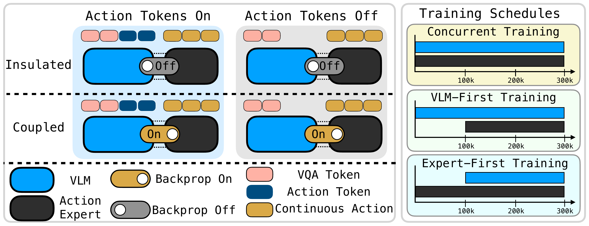
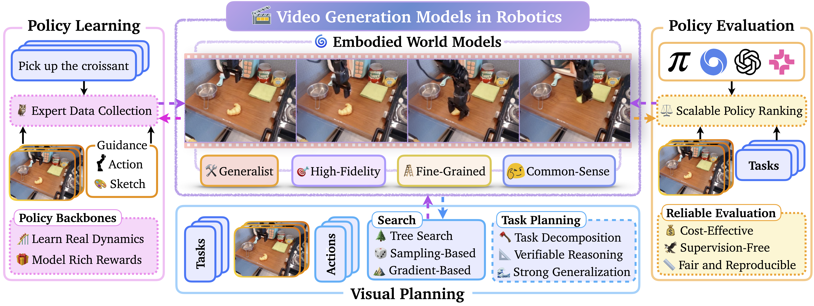
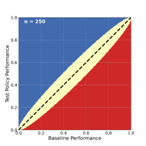
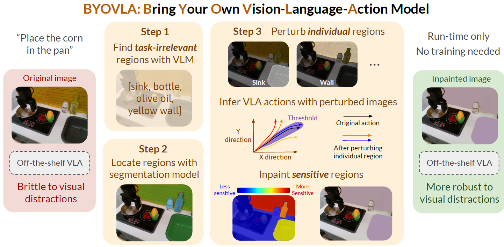
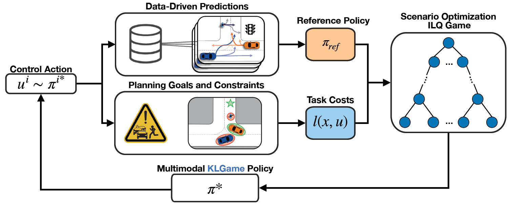
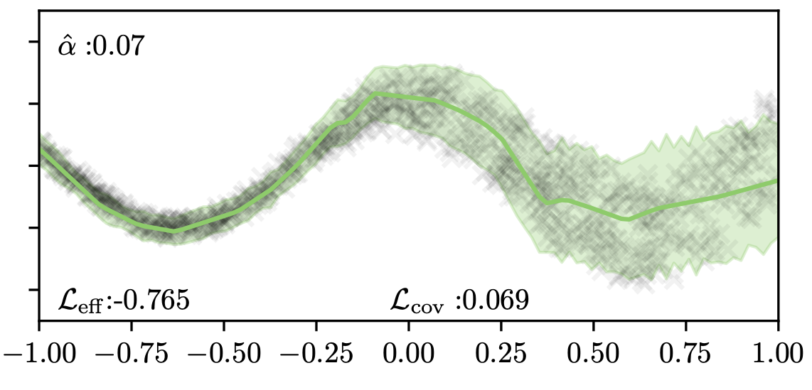
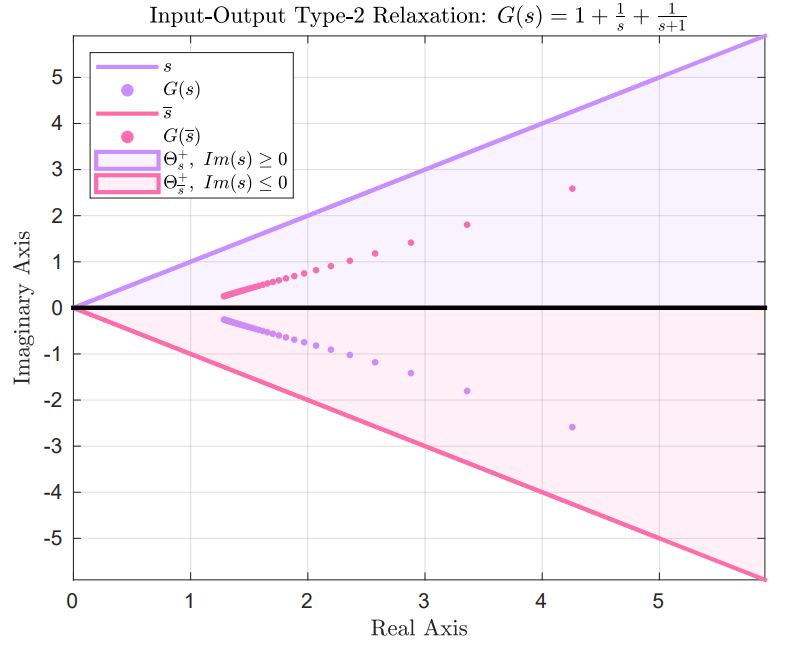

Robotics • Machine Learning • Foundation Models
Asher Hancock
I am a graduate student at Princeton advised by Anirudha Majumdar. I am also a PhD Research Intern in NVIDIA's ASPIRE group led by Marco Pavone.
Previously, I was an MPhil candidate in the Controls Group at the University of Cambridge under the supervision of Rodolphe Sepulchre.
I am broadly interested in AI and robotic foundation models.
Email: ajhancock [at] princeton [dot] edu
Publications


Video Generation Models in Robotics: Applications, Research Challenges, Future Directions






Honors and Awards
- 2022NSF GRFP
- 2022Churchill Scholarship
- 2021Goldwater Scholarship
- 2021Sigma Xi Membership
- 2020–21USRA Distinguished Undergraduate Award (2x Honorable Mention)